This content was first created for a talk at MEC.Conf, organized by the students of MEC Kochi on 06 October 2024.
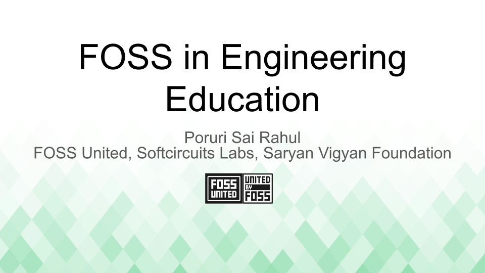
This content provides an opinionated journey into the FOSS communities. The journey is heavily inspired from my own personal journey from being a heavy FOSS user to eventually contributing to FOSS projects. Over the course of your college experience, I hope to show the audience how they can navigate the FOSS ecosystem, while staying grounded in their college curriculum.
This content is primarily aimed at STEM (Science, Technology, Engineering, Medicine) students, no matter how involved they already are in the FOSS ecosystem. The content was originally written for an audience that was primary first-year students at a FOSS-savvy south-Indian Engineering college but most of it should apply broadly to STEM fields. The content is a Work-In-Progress, especially in regards to the FOSS examples shared below.
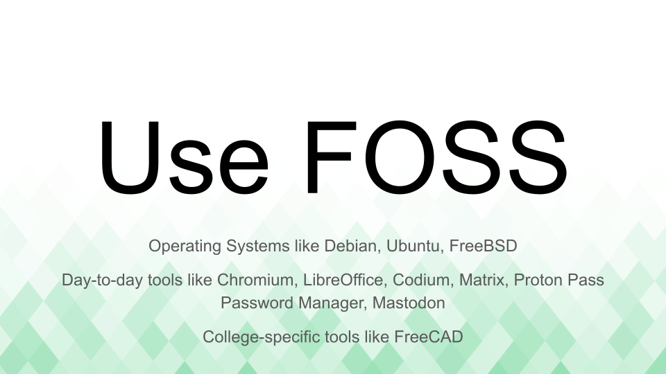
Personal Computers have become an integral part of the Engineering education and whenever you're using your PC, we would recommend using a FOSS tool instead of a Closed-source tool. Instead of using the Windows Operating System (OS), you could use a FOSS OS like Debian, Ubuntu, Rocky Linux, etc. Instead of using the Chrome Browser, you could use Chromium, Firefox, etc.
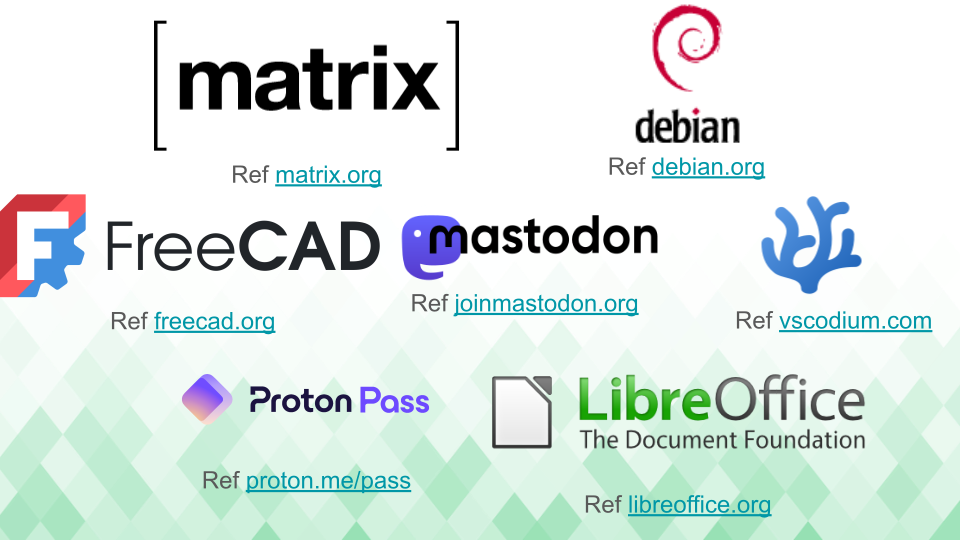
Here are a few FOSS alternatives to closed-source tools that students usually use.
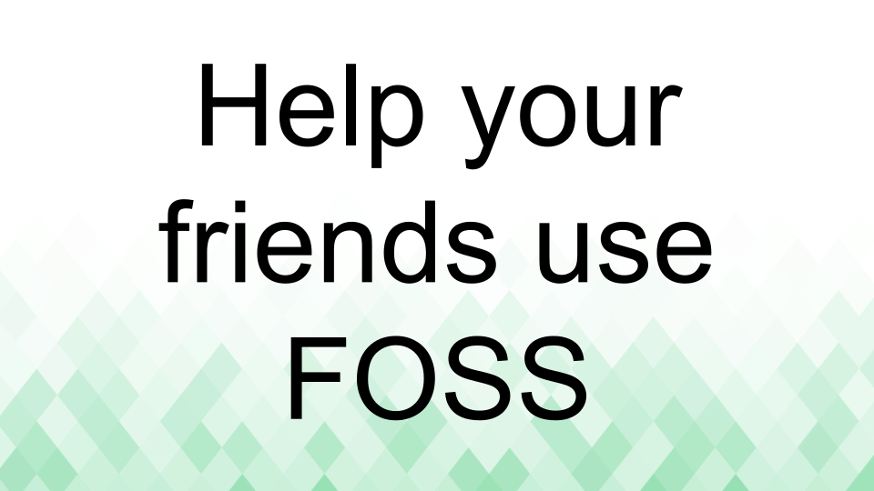
Unlike commercial closed-source software, FOSS projects don't have paid staff who can help new users understand the software. So FOSS communities need you help to onboard new users. Help your friends use the FOSS that you are comfortable using.
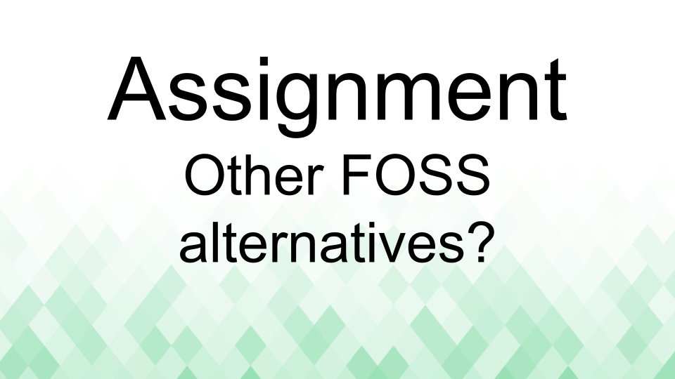
Commercial, closed-source software has been able to capture a significant number of PC users and usecases. In most situations, commercial closed-source software is the default option that comes to users' minds.
The internet should be able to help you understand if the tool that you're using is closed-source or open-source. The internet should also help you discover FOSS alternatives to the closed-source tools that you're using.
FOSS is by everyone, for everyone and not just by Computer Science (CS) students for CS students. CS students are exposed to FOSS more often than students from other Engineering disciplines but Computational Thinking can be applied to all Engineering disciplines. Interdisciplinary groups of people can help one another e.g. CS students help other Engineering disciplines adopt FOSS and the other Engineering disciplines can help CS students identify and solve domain-specific Engineering problems.
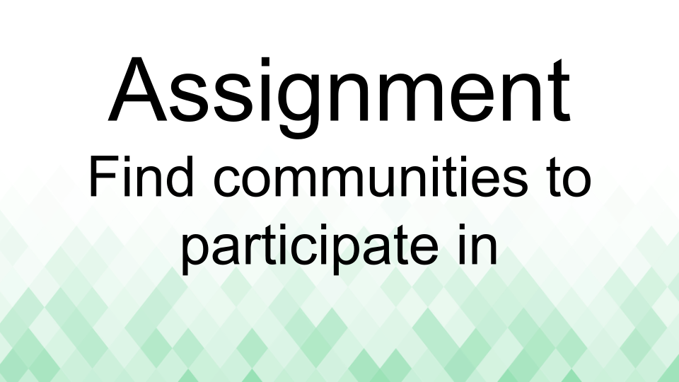
FOSS user communities are everywhere and you can participate in them physically or virtually. It might be a particular FOSS software that you use, a programming language that you like, a community that you appreciate. Participating in these communities is the first step in understanding the dynamics of FOSS.
Statistically, a majority of FOSS communities use English as the medium of communication - you will listen to people speaking in English, you will be speaking to them in English, and you will likely be communicating asynchronously in English. Even with the ongoing localization/translation efforts in many FOSS communities, English is still the default medium of communication, so becoming comfortable with English is sadly a pre-requisite to participating in FOSS communities.
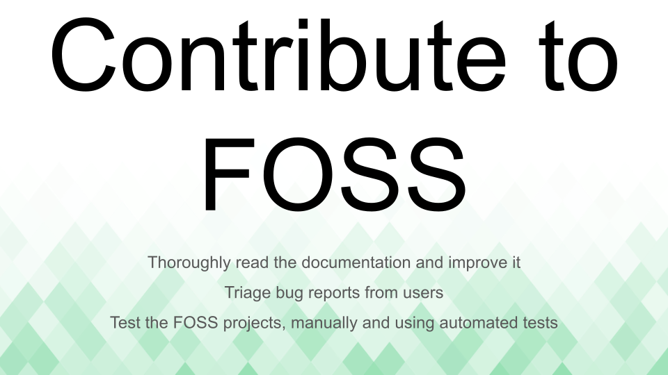
Code isn't the only way to contribute back to FOSS. Helping your friends use FOSS is a way to contribute back to the FOSS project. Addressing issues in the documentation is incredibly helpful as documentation efforts are often under-resourced. FOSS projects also need user testing e.g. consider using a beta, an alpha version, or a rolling release of the FOSS project to help them discover issues with the project because they are publicly released to the broader community.
FOSS projects, especially the popular projects, receive tens, if not hundreds, of tickets every day. The FOSS project maintainers are usually overburdended and any help to triage the issues is greatly appreciated. Triaging the issues involves verifying that the poster provided all of the necessary information, attempting to reproduce the issue locally, adding additional debugging information, etc.
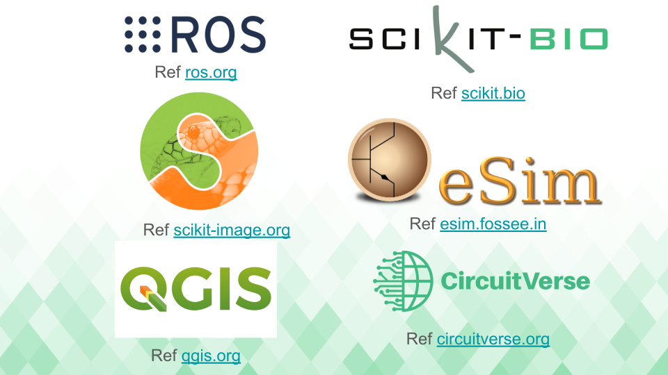
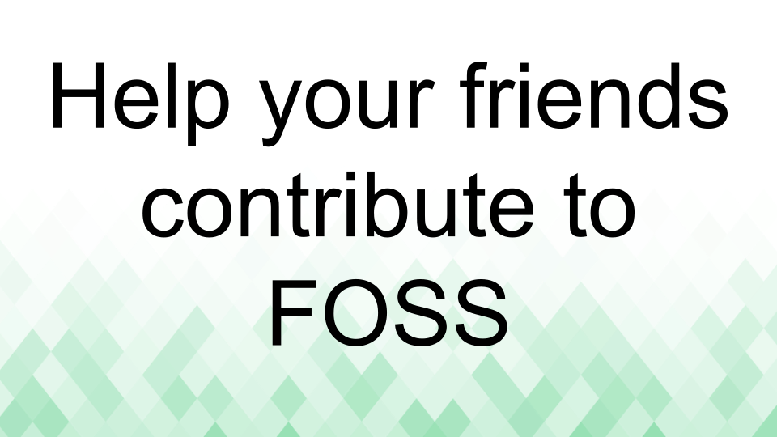
It's good to contribute back to FOSS projects that you use. It's great if you could help your friends contribute to FOSS projects that they care about, especially if they belong to a different Engineering discipline. Students from a non-CS engineering discipline might not have the necessary technical background to contribute to FOSS projects but that doesn't mean that they don't understand what could be better in a domain-specific FOSS project.
Report issues that your friends discover, help them understand FOSS communities, and if possible help them participate in the FOSS community and contribute technically.
The search for FOSS alternatives is a continuous process, especially if you are helping non-CS engineering students discover and use FOSS alternatives to closed-source software that is a part of their curriculum.
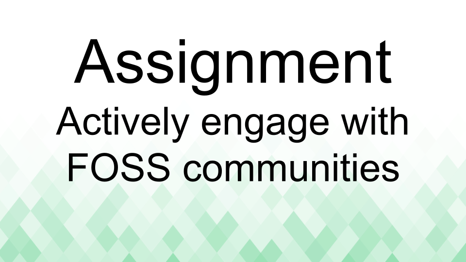
Actively engaging with the FOSS communities can take different shapes or forms. You could help newcomes who are joining FOSS community that you are a part of, you could help organize physical meetings of the community, etc. At the end of the day, as your awareness and understanding of the FOSS project increases, your engagement with the community should increase.
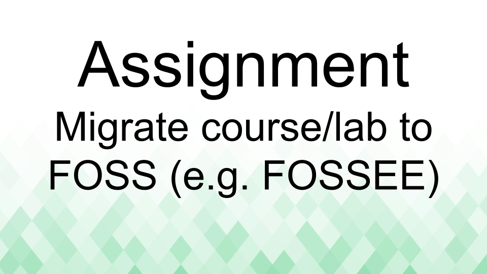
A significant number of courses in college curricula, especially in non-CS engineering curricula, rely on closed-source software. In most of these cases, there is no particular reason why the closed-source software are used instead of FOSS alternatives. The FOSS communities rely on users and volunteers to spread the word and a great way to significantly impact the usage is to ensure that future students can use the FOSS projects as part of the college curriculum itself.
FOSSEE at IIT Bombay, Mumbai has been putting together content to help Engineering education migrate away from closed-source software to FOSS alternatives.
There is a lot of value in applying Computational Thinking to solve fundamental Engineering problems, which is essentially what the nascent deep-tech startup ecosystems around the world are attempting to do.
I hope it now makes sense why I was recommending making friends from other domains. Only if you know the problems that exist in non-CS engineering disciplines and have access to people with the domain expertise can you actually solve such problems.
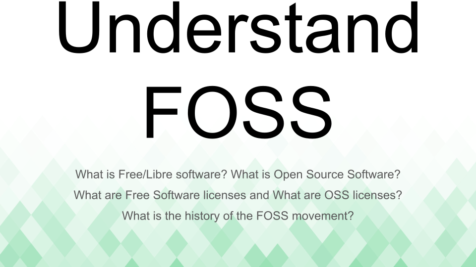
Some of you in the audience might feel that i'm introducing FOSS fundamentals too late. In my humble opinion, if the FOSS users find value in the projects, it is easier to motivate them to understand the FOSS fundamentals. Pushing new users to understand the history and philosophy of the FOSS movement before they understand the value of FOSS might be a sure shot way of losing them.
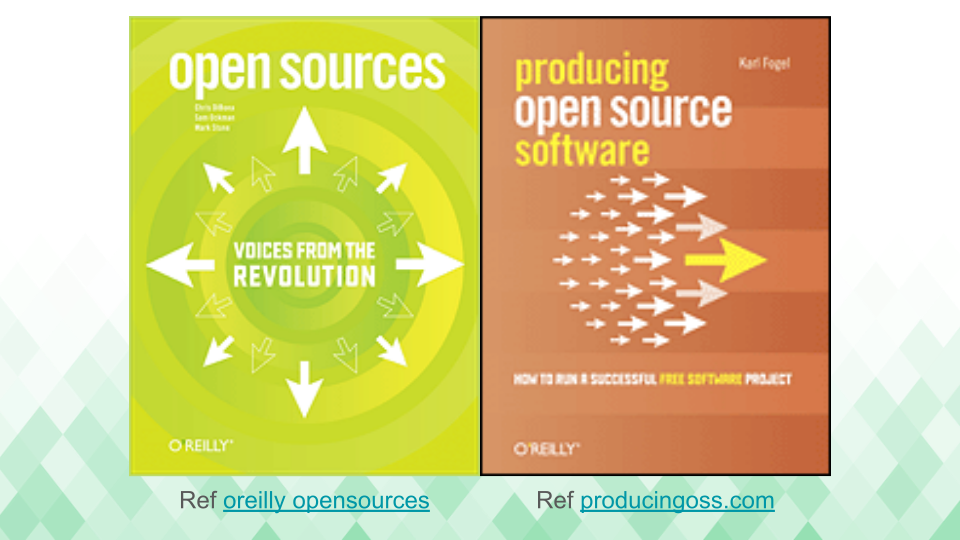
Open Sources: Voices from the Open Source Revolution and Producing Open Source Software are two great references to understand the history and the philosophy of the FOSS movement.
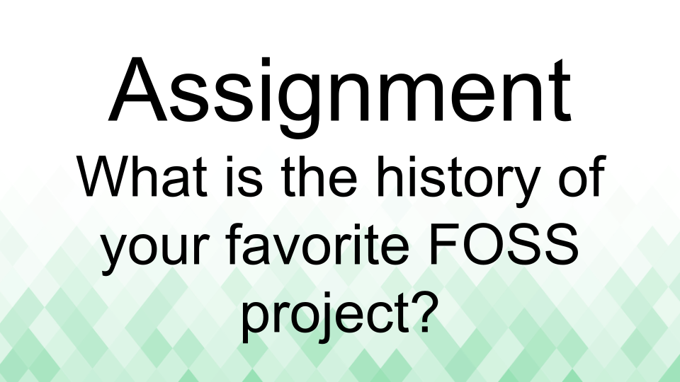
Or any other Free Software Foundation licenses or Open Source Initiative licenses.
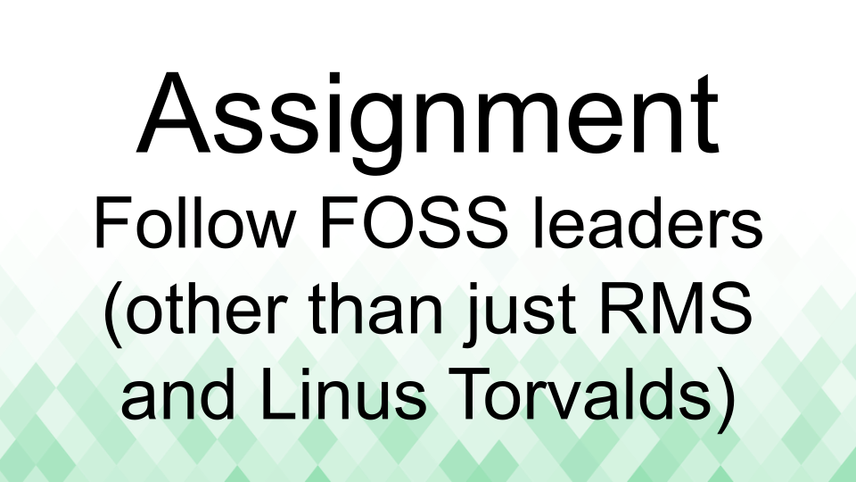
Maybe the creator of your favorite FOSS project, maybe the leaders of a FOSS community that you are a part of, etc.
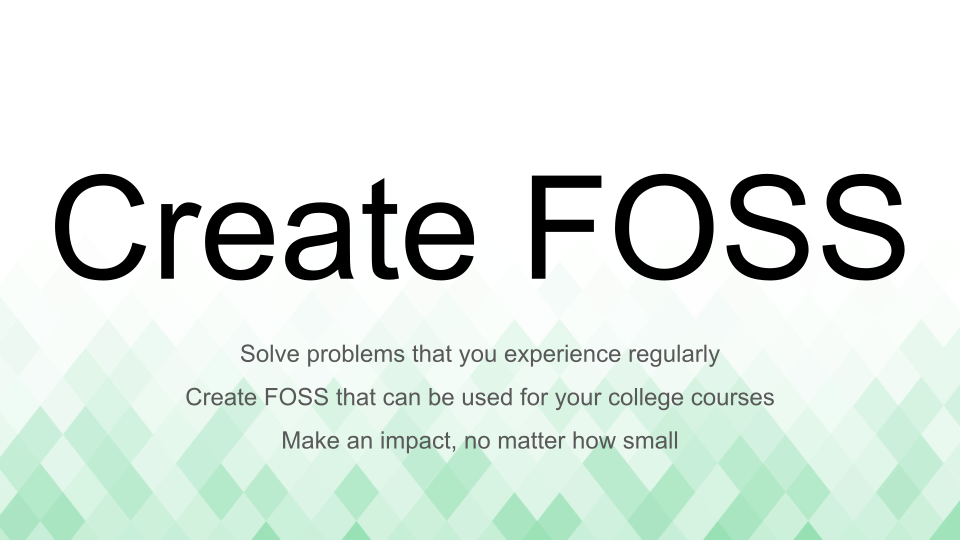
Solve the problems that you experience in your day-to-day life. Create something that can become a part of your college curriculum.
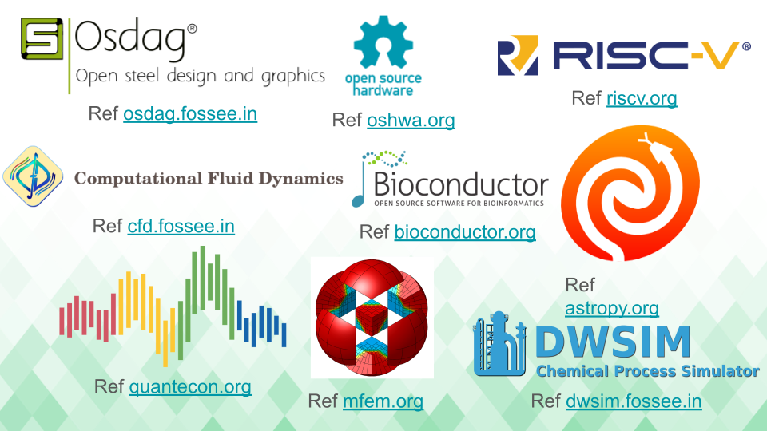
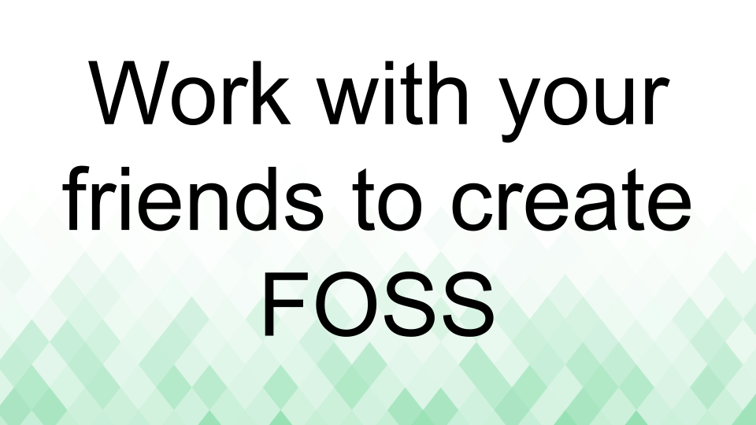
As you can see from the above list of FOSS projects, and like i've mentioned earlier, you can create a lot of value by applying Computational Thinking to non-CS Engineering disciplines.
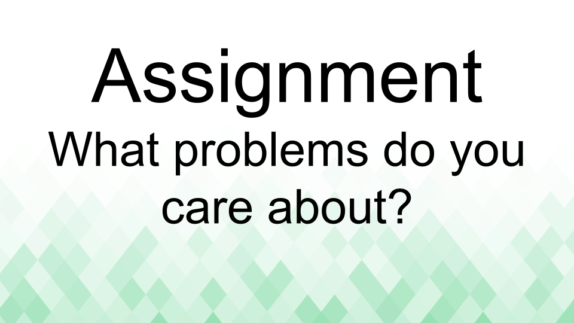
On a fundamental note, it's important to know the problems that you care about. Not just within the Engineering domain that you are specializing in but broadly in society. Because most (all?) successful FOSS projects are built by people who care about solving the problem.
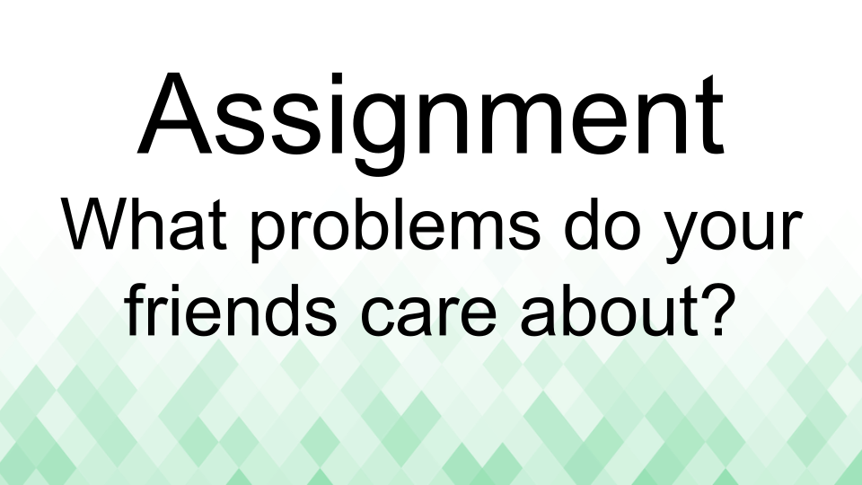
I feel like i'm repeating myself at this point but working with your friends, you could create FOSS that solves problems that a broad group of people care about.
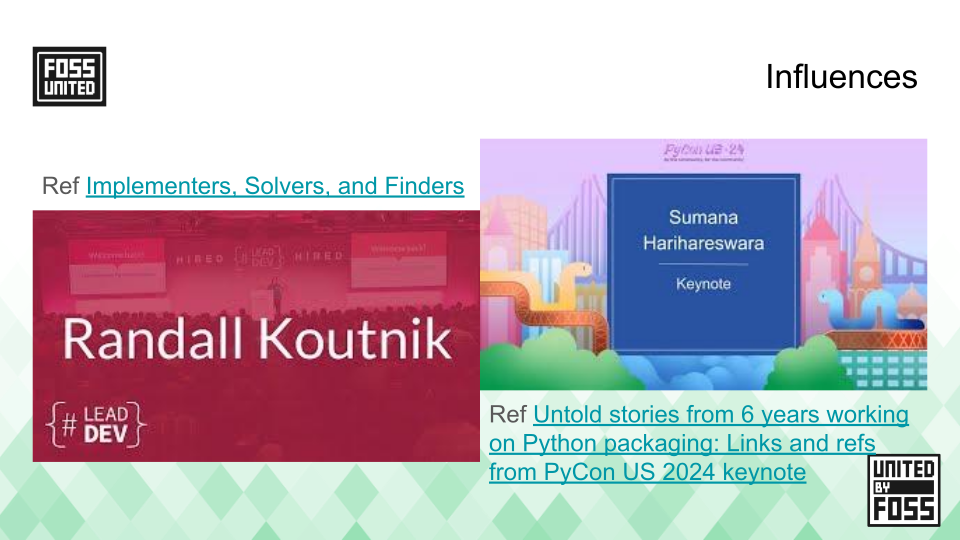
Rethinking the Developer Career Path by Randall Koutnik. and the original blogpost. Untold stories from six years working on Python packaging by Sumana Harihareswara. and the additional links and references
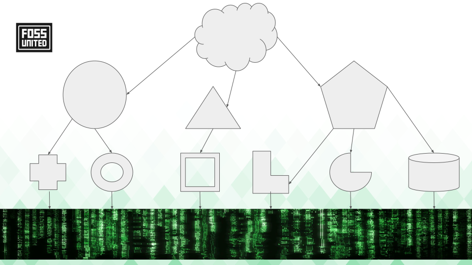
I don't know what GenerativeAI will or will not be capable of in four years but GenAI is already able to write code for simple solution e.g. a webpage that contains rows where each row contains an image on the left and text on the right.
It isn't sufficient for professional software developers to simply take solutions and write the necessary code. We need to be able to take amorphous "problems" and break it down into structured problems, which can then be broken down into smaller problems that are accessible to GenAI or beginner developers.
Please watch the "Rethinking the Developer Career Path" by Randall Koutnik above because he explains it much better than I can.
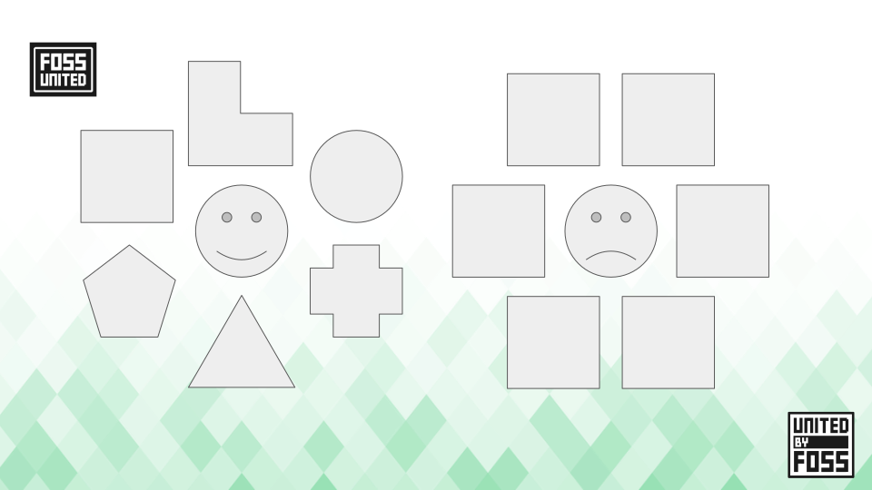
A happy software engineer has solved different kinds of problems over the course of their career unlike a software engineer who has only solved the same problem over and over again.
Please watch the "Rethinking the Developer Career Path" by Randall Koutnik above because he explains it much better than I can.
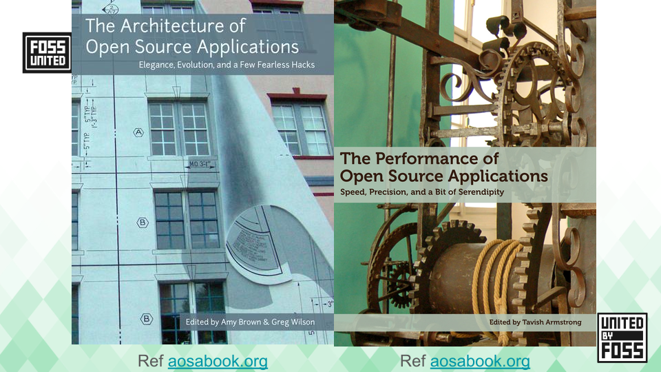
The Architecture of Open Source Applications The Performance of Open Source Applications are excellent resources to understand how popular FOSS creators handled the task of breaking down amorphous problems into meaningful FOSS solutions.
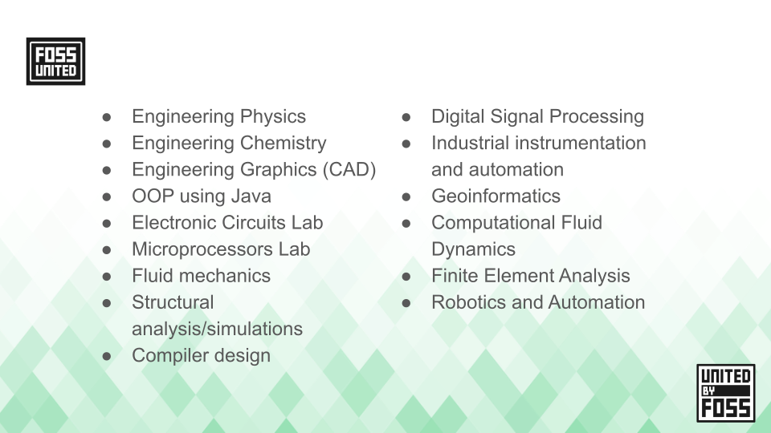
This content is a Work-In-Progress so please share relevant examples of FOSS in Engineering education which should be included here.
Inspired by the excellent talk Choose Boring Technology and the awe-inspiring work of Maciej Cegłowski.
Built with help from Claude 3.5 Sonnet, content is licensed under CC0 1.0 Universal license.